販売中
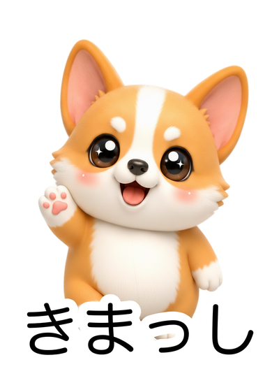
コギーの石川弁2
石川県の方言「金沢弁」をコギーが可愛くお届け！「きまっし」「あんやと」「がんばりまっし」など毎日使える石川弁が24種。ほっこり方言トークを楽しんで。
LINE STOREで見る →最新の活動はここでチェック！各SNSでも毎回お知らせしています🐾
制作実績とこれからの活動
オリジナルキャラクターによるLINEスタンプを企画・制作。日常・応援・スポーツ実演・特集など多彩なシリーズ、計30パック以上を LINE STORE で配信中。
Instagram・X(Twitter)・Threads でブログ更新やキャラの日常を発信。
Suno AIで制作したオリジナル楽曲をYouTubeで配信中。タキシード姿のコーギー＆シュナウザーが踊るかわいいポップソングをお届け。
🎉 全34パック展開中！日常・応援・スポーツ実演・特集シリーズなど多彩に展開

石川県の方言「金沢弁」をコギーが可愛くお届け！「きまっし」「あんやと」「がんばりまっし」など毎日使える石川弁が24種。ほっこり方言トークを楽しんで。
LINE STOREで見る →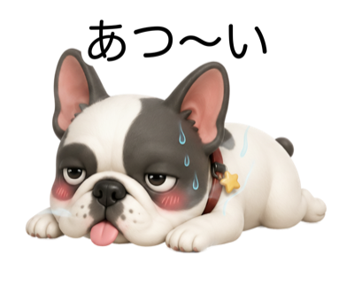
「あつい」「むり」「とけそう」——夏バテフレブルが繰り出す脱力系の夏スタンプ24個。Frenchie Summer Daily。
LINE STOREで見る →
ふわっとかわいいコーギー「コギーちゃん」のきもちを24個に込めた、毎日使える定番スタンプ。
LINE STOREで見る →
白眉毛＆髭のミニチュアシュナウザー「ヒゲおじ」が一言でテンポよく会話を盛り上げる。
LINE STOREで見る →📖 Kindleで全14冊配信中！読み聞かせ向けのオリジナル絵本と、英単語えほんシリーズ
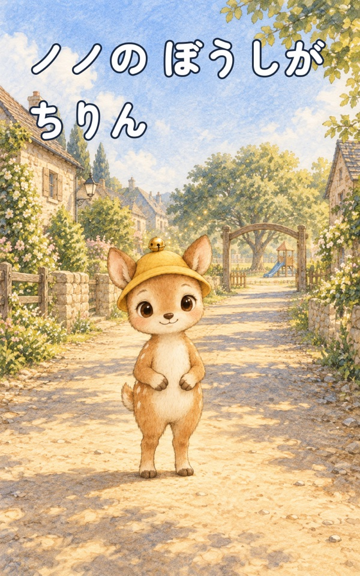
ひっこしてきた町の ようちえん。もんは、とおい——。きいろい ぼうしの すずを ぎゅっと おさえて、木の うしろに かくれた こじかの ノノが、ひとりぼっちの こねこを 見つけて、自分で すずから 手を はなして 一歩 ふみだすまでの話。あたらしい 場所が こわい日の 絵本。読み聞かせ4〜6歳向け。
Amazonで見る →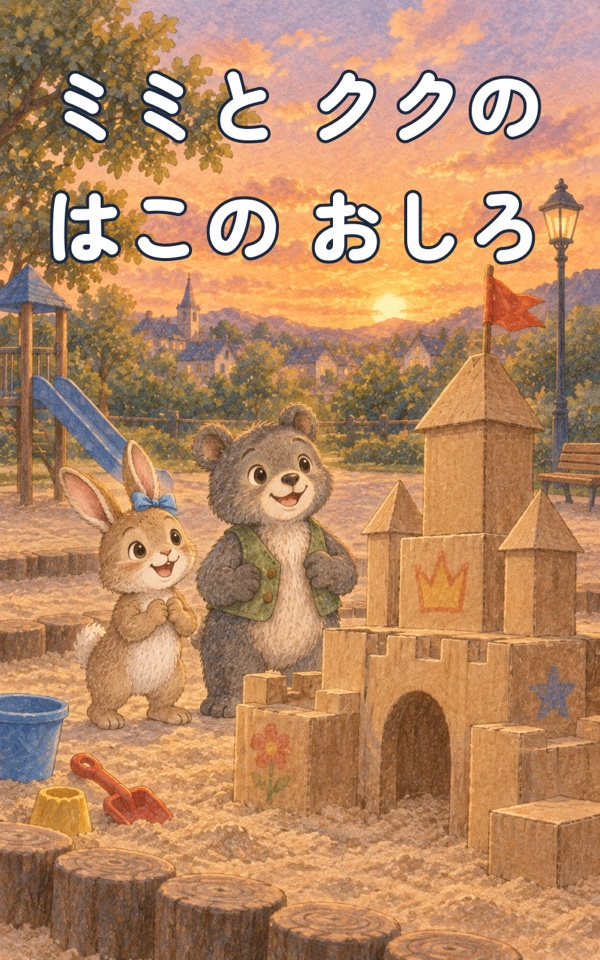
赤い旗を立てたかった ミミと、旗を ななめに立てた クク。「あっち いって！」と言ってしまった公園の夕方、ミミの「ごめん」は のどで ひっかかる——。ともだちとけんかした日の気持ちと、「ごめん」が ぽろんと 出るまでを描いた絵本。読み聞かせ4〜6歳向け。
Amazonで見る →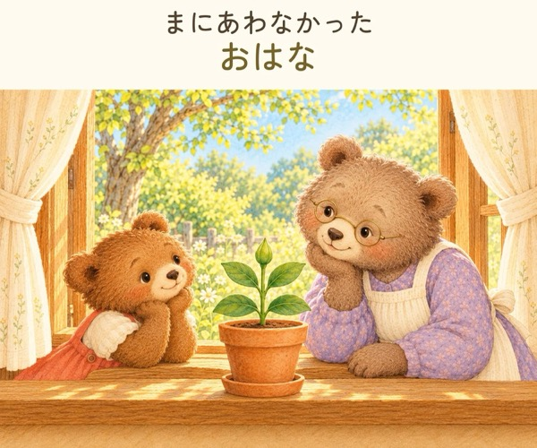
おばあちゃんのおたんじょうびに、じぶんで育てたお花をあげたい——。こぐまのミナが大切に育てたお花は、当日の朝もつぼみのまま。思いどおりにならない日の気持ちと、いっしょに待つよろこびを描いた絵本。
Amazonで見る →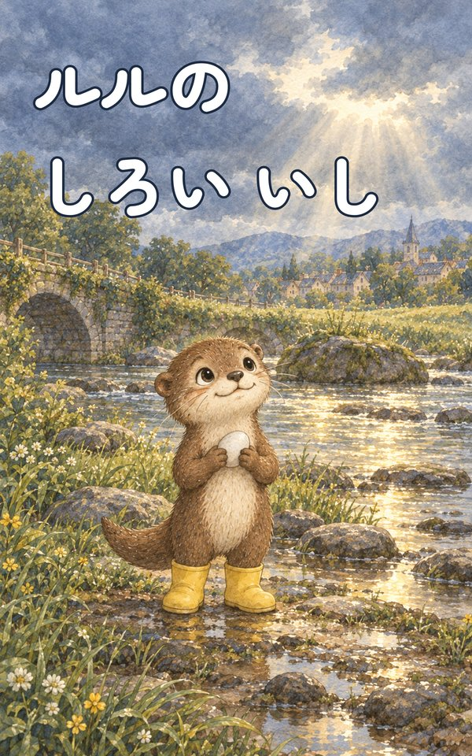
たからものの しろい いしが、ない——。川あそびの昼すぎ、なくした石を 下ばかり向いて さがす かわうその子ルルに、チワコギーが ひとこと たずねる。「いちばん さいごに もってたの、どこ？」。立ち止まって思い出し、前を向いて歩きだすまでの話。読み聞かせ4〜6歳向け。
Amazonで見る →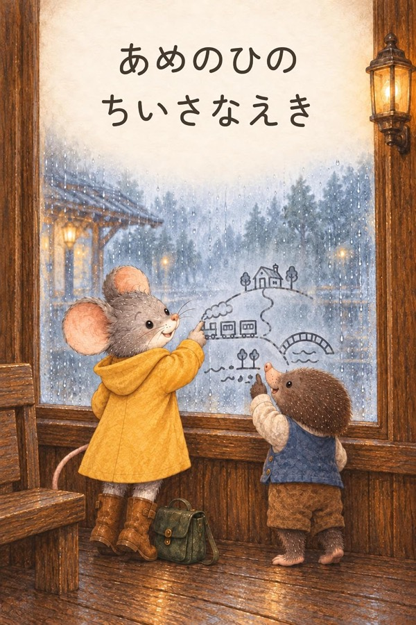
おばさんにパンを届けに出かけたミト。雨の駅で列車はなかなか来ません。くもった窓に描いた小さな列車に、みんなの絵が加わって——いつもの待ち時間が、誰かとつながる時間に変わっていく話。
Amazonで見る →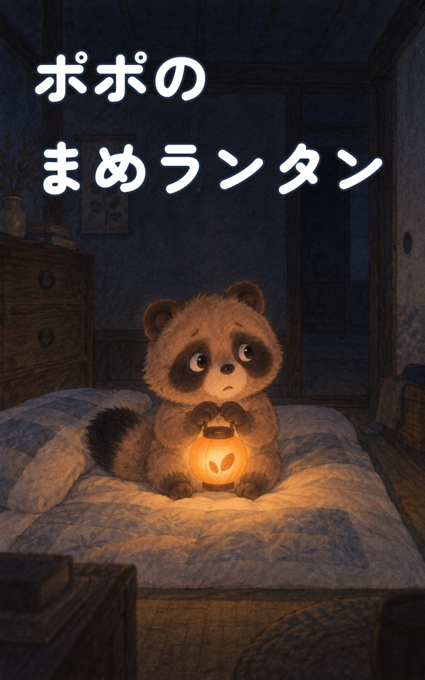
よるに なると、へやの くらがりに なにか いる きがして ねむれない——。てばなせない まめランタンを つけた たぬきの子ポポに、チワコギーが ひとこと たずねる。「その くらがり、のぞいてみた？」。じぶんで あかりを もって ちかづいてみた先には……。おやすみ前の読み聞かせ向け。
Amazonで見る →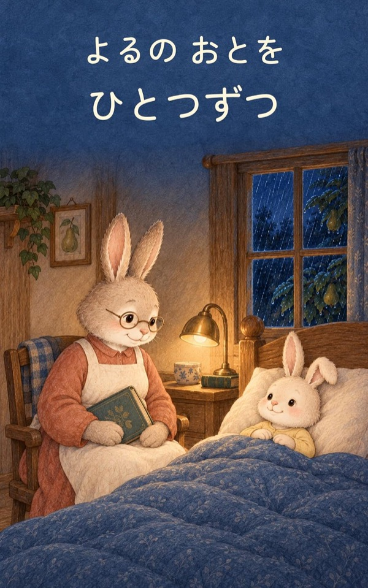
かたん。ぽとん。おばあちゃんの家ではじめてのお泊まりをする、こうさぎのニナ。夜の知らない音を、おばあちゃんとふたりで耳をすませてひとつずつたどる、おやすみ前の読み聞かせに。4〜8歳向け。
Amazonで見る →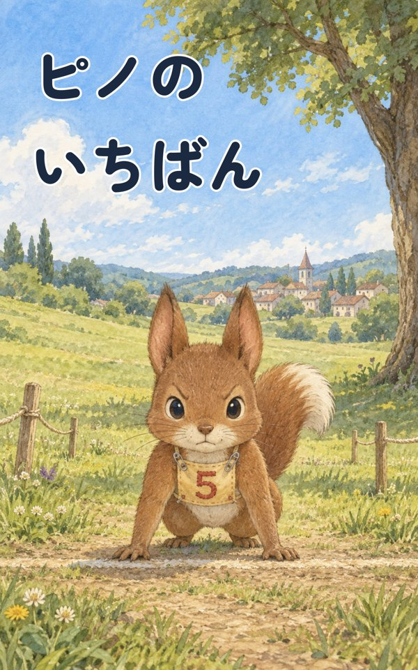
かけっこで、ピノは いつも ビリでした——。じぶんで ぬったゼッケンをつけても足がもつれて、また ビリ。くやしさを だれにも見せられず木のかげに かくれた子リスに、チワコギーが ひとこと たずねる。「かけっこ、たのしい？」。「いちばん」の意味が じぶんの中で変わるまでの話。読み聞かせ4〜6歳向け。
Amazonで見る →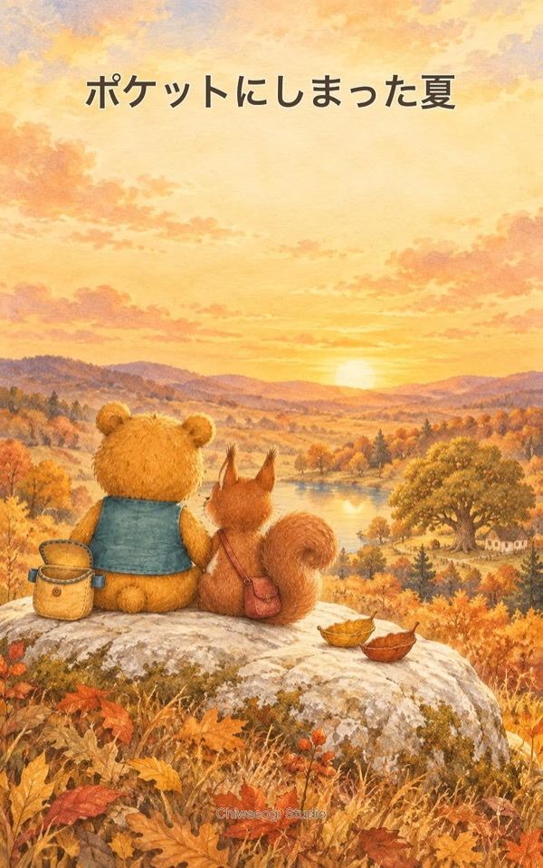
友だちのリリが引っ越すと聞いた、こぐまのコロ。池の水辺や丘の夕日を小さな黄色いポケットにしまって夏を残そうとします。手放すことは忘れることではないと知っていく、やさしい秋の物語。6〜9歳向け。
Amazonで見る →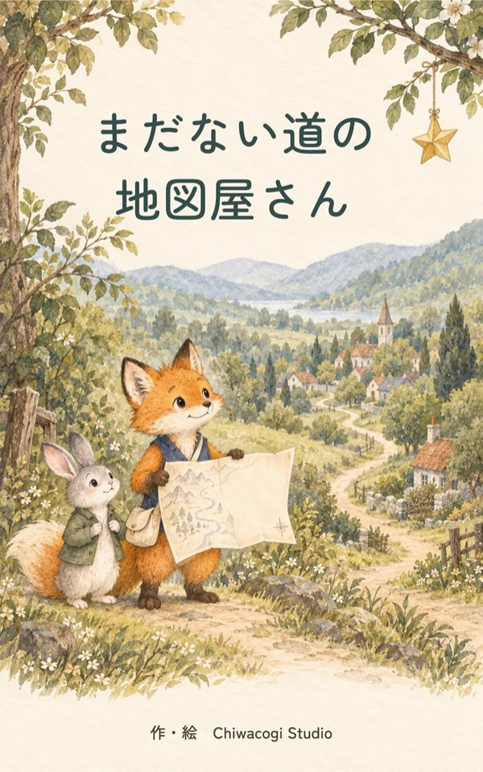
谷の小さな地図屋さん、こぎつねのミオ。友だちを迎えにいく日、嵐でいつもの橋がなくなっていて——「知らない」と言えなかったミオが、地図の折り目をひらくまでのお話。6〜9歳向け。
Amazonで見る →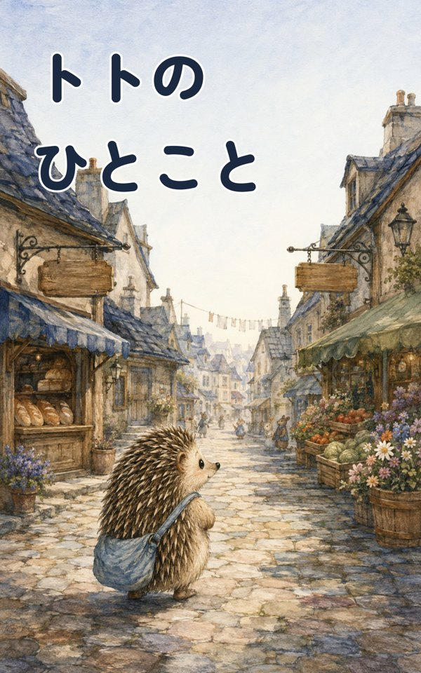
道はぜんぶ おぼえているのに、「ください」の ひとことが 言えない——。はじめてのおつかいに出たハリネズミの子トトが、パン屋の前で立ちすくむ。ベンチのチワコギーの問いかけをきっかけに、はじめて自分の声を外に出すまでの話。読み聞かせ4〜6歳向け。
Amazonで見る →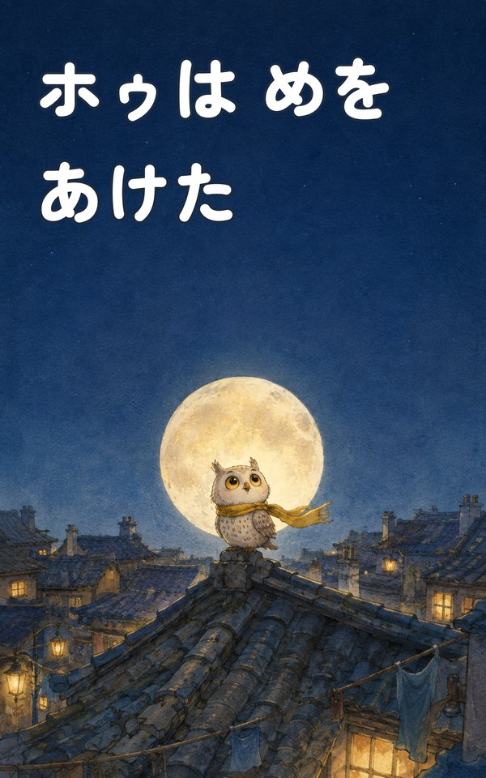
みんな とべるのに、ぼくだけ とべない——。屋根のふちで足がすくむふくろうの子ホゥに、夜の道を通りかかったチワコギーが問いかける。「そこから なにが みえる？」。夕やけから夜明けまでを水彩で描いた、はじめての「できた」の絵本。読み聞かせ4〜6歳向け。
Amazonで見る →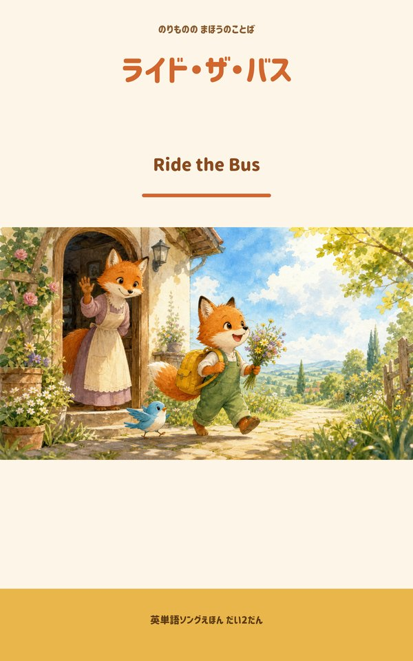
のりものをテーマにした英単語えほん。ふしぎな地図の合言葉を集めながら、bus・car・train…と乗り物のことばに出会っていく。全ページひらがな、英単語にはカタカナ読み付き。
Amazonで見る →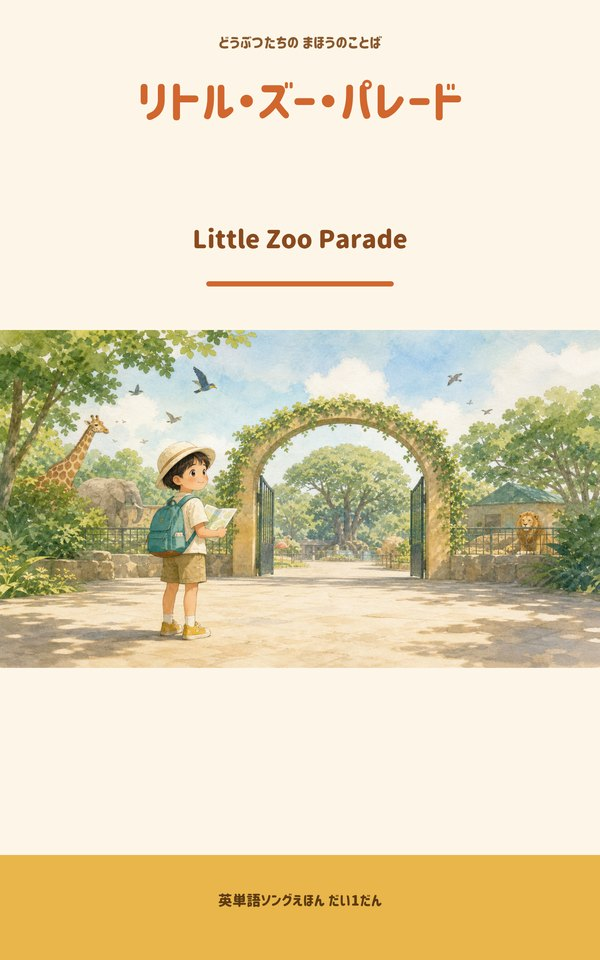
12個の合言葉を集めると、動物たちがすてきなパレードを始める——。bird・fish・lion…と動物のことばを覚えながら進むクエスト型の英単語えほん。シリーズ第1作。
Amazonで見る →🛍️ コギーちゃん＆ヒゲおじのグッズをSUZURIで全11点販売中！マグカップ・ステッカー・アクリルキーホルダー
🎵 Suno AIで制作したオリジナル楽曲・BGMをYouTubeで全241本公開中！
残された王国も玉座もない荒野で、灰と黄金から自分たちの王国を築き上げる放浪者たち——廃墟から立ち上がる者を描いた壮大なハードロックアンセム。
YouTubeで聴く →夜明け前、霧に包まれた湖畔。灰青色の薄明の光が水面を這い、時折水鳥が静かに羽ばたく——静けさに包まれた朝を描く和のアンビエント40曲。瞑想やヨガの時間に。
YouTubeで聴く →久しぶりに帰った実家、台所の音と味噌汁の香り、「おかえり」の一言。母の背中と台所の灯りの温かさが自分の原点だと気づく、親子の情景を描いた邦楽バラード。
YouTubeで聴く →🎧 オリジナル楽曲をEPにまとめて、Spotify・Apple Music・Amazon Musicなどで配信中！（アーティスト名：Chiwacogi Studio）
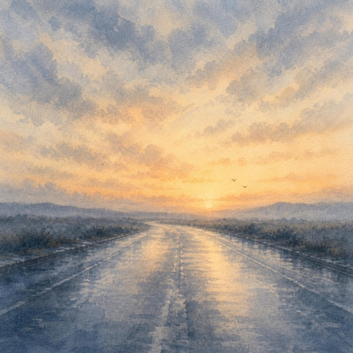
夜を切り裂いて／傷跡を翼に変えて ほか、日本語ロックを中心にした6曲
配信サービスで聴く →ひと夏の物語順に並べたバイリンガルの「夏」EP
配信サービスで聴く →デビューEP。英語詞のオリジナル曲6曲
配信サービスで聴く →少しずつ広げていく活動